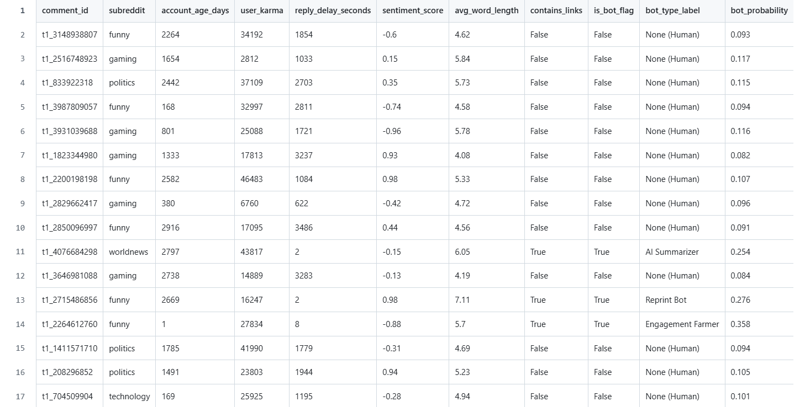

Projects
TouchDesigner #1
First TouchDesigner project! Canada Day fireworks reconstructed and overlaid as a 3D particle system, displaced by brightness. Built using TOP to SOP; converted 2D video texture into 3D point geometry.

Dead Internet
Bot detection analysis on Reddit comment data in a Jupyter Notebook with Python. Built to detect automated content using behavioral and linguistic features.
GitHub →